四、 基于邻域的算法
分为两类：基于用户的协同过滤算法UserCF、基于物品的协同过滤算法ItemCF。
1. 基于用户的协同过滤算法
主要两个步骤：
a. 找到和目标用户兴趣相似的用户集合
b. 找到这个集合中的用户喜欢的，且目标用户没有听说过的物品推荐给目标用户
(1) 计算两个用户兴趣的相似度（利用用户行为）
给定用户u和用户v，令N(u)表示用户u曾经有过正反馈的物品集合，令N(v)表示用户v曾经有过正反馈的集合。那么，u和v的兴趣相似度就可以用如下Jaccard公式计算：
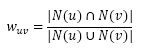
或通过余弦相似度计算：
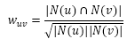
（关于算法方面要说的：很多用户其实并没有相交的物品，所以考虑到时间复杂度，可以先判断哪些用户的 ，然后再计算。这里的“判断”可以是建立一个物品到用户的倒排表，用稀疏矩阵表示，如下。）
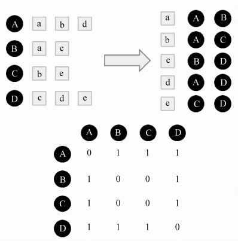
(2) 给目标用户推荐物品
a. UserCF算法中用户u对物品i的感兴趣程度：
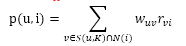
其中，S(u,K)包含和用户u兴趣最接近的K个用户，N(i)是对物品i有过行为的用户集合， 是用户u和用户v的兴趣相似度， 代表用户v对物品i的兴趣，因为使用的是单一行为的隐反馈数据，所以所有的 。
测评：测量不同K值下UserCF算法的性能指标。
测评结果：对比已有的Random算法和MostPopular算法，UserCF有一个很关键的参数K，随着K的增长，大概在K=80的时候UserCF的准确率和召回率达到最佳水平。同时，随着K增长，流行度在不断增长，因为K越大，参考的用户就越多，结果就越接近全局热门物品。而覆盖率就随K增长而降低了，因为流行度的增长导致了长尾物品更多地被忽略，覆盖率就随之下降。
(3) 用户相似度计算的改进
要解决的问题：两个用户对冷门物品采取过同样的行为更能说明他们兴趣相似度。
John S. Breese提出了如下计算用户的兴趣相似度的公式：
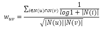
看以看出， 上式分子中的分数因子惩罚了用户u和用户v共同兴趣列表中热门物品对他们相似度的影响。
运用上式的用户相似度计算称为User-IIF算法。
测评：同样取K=80，测评结果表明User-IIF在各项性能上略优于UserCF算法。
(4) 在实际在线系统试用UserCF的例子
Digg通过“顶”和“踩”来判断用户的兴趣，这种活动不断地带动了用户反馈的行为，而且推荐结果也促进了交互活跃度和用户评论。
2. 基于物品的协同过滤算法
要解决的问题：基于用户的协同过滤存在一些问题，例如随着用户量增加，计算用户兴趣相似度矩阵将越来越困难，时间复杂度和空间复杂度都和用户数的增长近似于平方关系。
基于物品的协同过滤并不是分析物品内容间的关系，而是通过用户行为记录计算物品之间的的相似度。（Customers Who Bought This Item Also Bought）
主要两个步骤：
a. 计算物品之间的相似度
b. 根据物品的相似度和用户的历史行为给用户生成推荐列表。
(1) 计算物品相似度
物品的相似度公式：
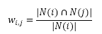
分母是喜欢物品i的用户数，分子是同时喜欢物品i和物品j的用户数。上式可理解为：喜欢物品i的用户中有多大比例也喜欢物品j。
上式存在的问题：如果物品j很热门，大家都喜欢，那么就会影响相似度计算，这对于挖掘长尾信息的推荐系统来说不是一个好特性。则有如下改进公式：
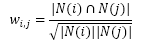
这个公式惩罚了物品j的权重，因此减轻了热门物品回合很多物品相似的可能性。
具体操作方法：类似于UserCF，ItemCF也可以先建立用户-物品倒排表（对每个用户建立一个他喜欢的物品列表）
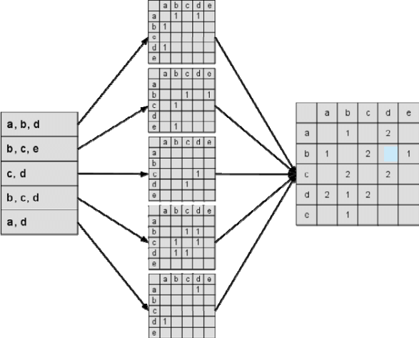
图中最左边是输入的用户行为记录，每一行代表一个用户感兴趣的物品集合。然后，对于每个物品集合，我们将里面的物品两两加一，得到一个矩阵。最终将这些矩阵相加得到C矩阵。
(2) 计算用户对物品的兴趣
ItemCF通过如下公式计算用户u对物品j的兴趣：
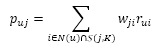
是用户u喜欢的物品的集合，S(j,K)是和物品j最相似的K个物品的集合， 是物品j和i的相似度， 是用户u对物品i的兴趣。对于隐反馈数据集，如果用户u对物品i有过行为，即可令 。
上述公式的含义是：和用户历史上感兴趣的物品越相似的物品，越有可能在用户的推荐列表中获得比较高的排名。
测评和结果：
a. 选对K值对获得高推荐精度是非常重要的（K值与推荐精度非正相关）
b. K值与流行度也不是正相关的
c. K增加会降低系统的覆盖率
(3) 用户活跃度对物品相似度的影响
要解决的问题：“书店老板网上进书”的问题，并非出于兴趣，而且庞大的购书量会导致巨大矩阵，导致内存告急。
John S. Breese提出的IUF参数，即用户活跃度对数的倒数，这个参数可以削弱过于活跃的用户（书店老板这种）对物品相似度的贡献（即惩罚），修正后的公式如下：
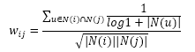
但这只是软性惩罚，对于真正的过于活跃的用户，在计算时还是直接忽略他的兴趣列表。
以上算法称为ItemCF-IUF算法。
测评和结果：提高了推荐结果的覆盖率，降低了推荐结果的流行度。改进了ItemCF的综合性能。
(4) 物品相似度的归一化
Karypis在研究时发现如果把ItemCF的相似度矩阵按最大值归一化，可以提高推荐的准确率、覆盖率和多样性。
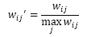
3. UserCF和ItemCF的综合比较
(1) 结果综述
UserCF推荐结果着重于反映和用户兴趣相似的小群体的特点（更社会化），而ItemCF推荐结果着重于维系用户的历史兴趣（更个性化）。
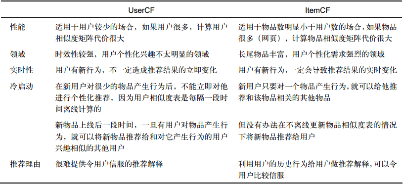
(2) 各种曲线的走向
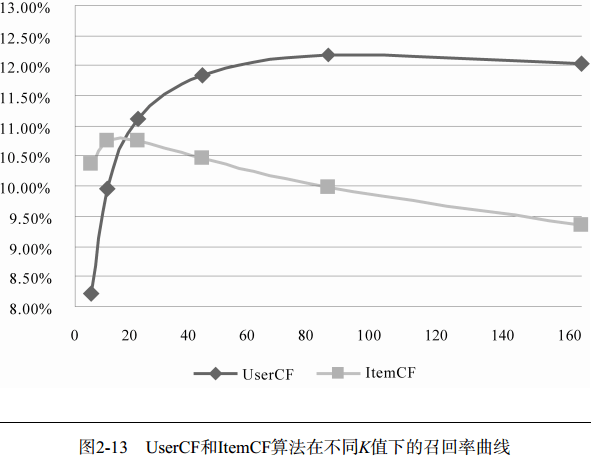
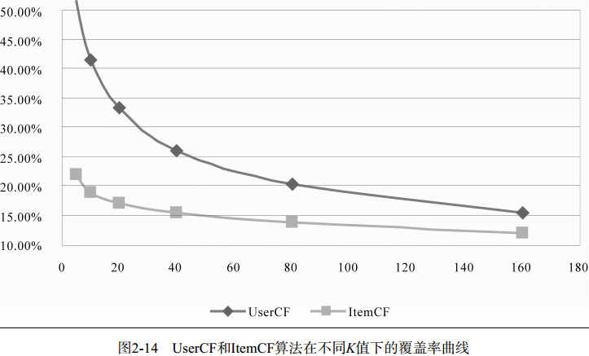
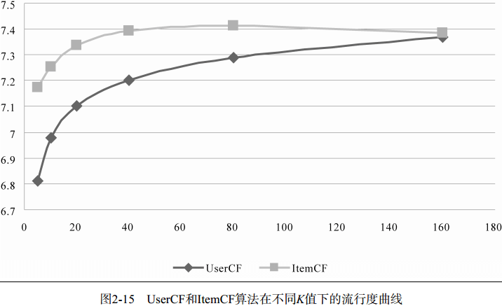
注意：离线实验的性能在选择推荐算法的时候并不起作用。
(3) 《哈利波特》问题
如上面所说，ItemCF算法容易被很热门的物品所影响，那么计算出来的相似度就是很多物品都会被算作跟这个热门物品“相似”。
其实在定义ItemCF时，已经给出了这种问题的一个解决办法：在分母加大对热门物品的惩罚，如下：
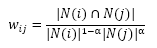
其中，α取0.5就是标准的ItemCF算法，α越大，对物品j的惩罚程度就越大。下面是α取值对各项测评指标的影响：
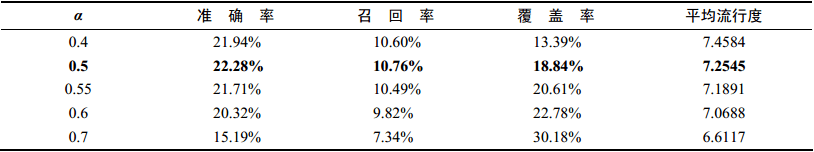
可以看出：α越大，准确率和召回率都变得越低，但是可以提高覆盖率和流行度。这说明使用较高的α可以适当地牺牲准确率获得覆盖率。
但上述方法还能彻底解决《哈利波特》问题，每个用户一般都会在不同领域喜欢一种物品，这样就导致两个不同领域的最热门物品之间往往具有比较高的相似度。这个时候，仅靠用户行为数据是不能解决这个问题的，只能依靠引入物品的内容数据解决这个问题了。